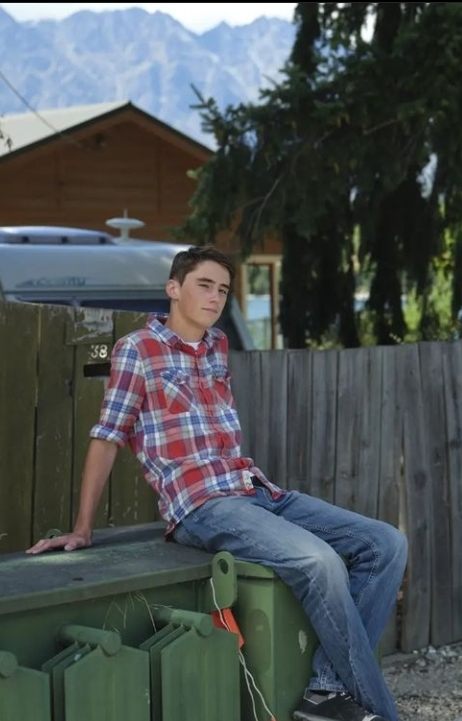
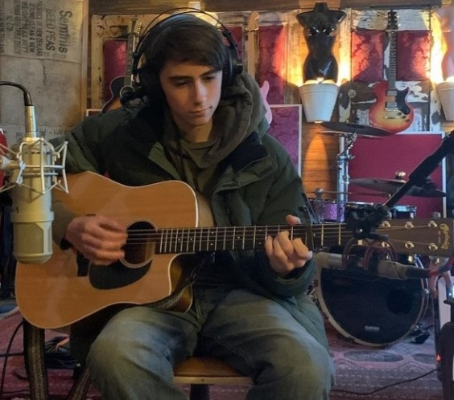

Hi again, here's the section where you can find out all about me, my life, my expertise
in web design and why I'm qualified for the job you need me to do! To introduce myself,
I'm Jack Speedy, a 16 year old professional web designer based in Queenstown, New Zealand,
Though obviously my job lets me access people from all over.
Apart from web design, I enjoy many other hobbies such as science, skiing, backpacking,
going out with friends, and playing the guitar. I even have a song of my own, "Don't Call
Me Home" out on Spotify

As mentioned, I'm from Queenstown, New Zealand, and as of 2022 I'm attending the high school
in order to learn more about web development and other things that pique my interest
I got into coding when I was quite young and started taking coding classes when I
was 14. I actually made my first game on scratch when I was that age (seen on the right).
It was terrible but it was fun, I then branched into web development at 15 and now I'm
a freelance web designer for hire!